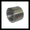

股票代码：430334|
 |
登录|
联系我们|
中文/EN
|
登录|
联系我们|
中文/EN

股票代码：430334|
|
登录|
联系我们|
中文/EN

A+K平衡流量计是第三代节流装置，这种流量计的测量精度是传统孔板节流装置的5～10倍，流动噪声降低到1/15，永久压力损失约为1/3，压力恢复快2倍，最小直管段为0.5D～2D，没有活动部件，安装简单方便，使用安全可靠，可省去大量直管段，大大减少流体运行的能量消耗...
A+K平衡流量计（BFM: Balanced Flow Meter）。这种流量计的测量精度是传统孔板节流装置的5～10倍，流动噪声降低到1/15，永久压力损失约为1/3，压力恢复快2倍，最小直管段为0.5D～2D，没有活动部件，安装简单方便，使用安全可靠，可省去大量直管段，大大减少流体运行的能量消耗，是一种具有广阔应用前景的节能仪表。
平衡流量计(BFM)对传统节流装置进行了极大的突破，具有能平衡调整流场的显著特征。传统节流装置只有一个流体节流孔，节流后使流体失去了理想的状态，而平衡流量计设计有多个函数孔，能最大限度地将流场平衡调整成理想状态，从而将差压式流量计的优势发挥到极至。
2006年底，上海科洋科技研发A+K平衡流量计并中国市场，上海设立合作加工基地，已申请并陆续获得中国实用新型和发明专利。凭借20多年中国工业仪表市场推广与服务经验，将为中国全行业用户提供高精度、低成本、节能增效型流量仪表，为建设资源节约型、环境友好型和谐社会持续努力。
A+K BFM国际通称平衡流量计，中国称“平衡差压节流装置”，是一种革命性的差压式流量仪表。平衡流量传感器是一个多孔的圆盘节流整流器，安装在管道的截面上，每个孔的尺寸和分布基于独特的公式和测试数据定制，称为函数孔。当流体穿过圆盘的函数孔时，流体将被平衡调整，涡流被最小化，形成流速分布有一定规律的充分发展的紊流，通过取压装置可获得稳定的差压信号，根据伯努利方程计算出体积流量、质量流量。
现今大量使用的标准孔板节流装置，由于只有一个节流孔，孔两边的死区产生大量涡流消耗流体动能，会导致很大的永久压力损失；随机和杂乱涡流所形成的噪声引起取压点信号波动，使测量线性度和重复性降低；一个孔的结构，需要很长的直管段来调整流场和恢复压力。
A+K平衡流量传感器相关的测试和检定是由美国航天技术人员进行的，相关的技术和测试数据是经过田纳西A&M大学确认。测试结果证明：A+K平衡流量传感器通过多孔圆盘节流整流器，能巧妙实现流体平衡测量，明显减少涡流的形成、降低死区效应、减少流体动能的损失，降低涡流带来的取压点信号波动。
A+K平衡流量计（BFM: Balanced Flow Meter）。这种流量计的测量精度是传统孔板节流装置的5～10倍，流动噪声降低到1/15，永久压力损失约为1/3，压力恢复快2倍，最小直管段为0.5D～2D，没有活动部件，安装简单方便，使用安全可靠，可省去大量直管段，大大减少流体运行的能量消耗，是一种具有广阔应用前景的节能仪表。
平衡流量计(BFM)对传统节流装置进行了极大的突破，具有能平衡调整流场的显著特征。传统节流装置只有一个流体节流孔，节流后使流体失去了理想的状态，而平衡流量计设计有多个函数孔，能最大限度地将流场平衡调整成理想状态，从而将差压式流量计的优势发挥到极至。
2006年底，上海科洋科技研发A+K平衡流量计并中国市场，上海设立合作加工基地，已申请并陆续获得中国实用新型和发明专利。凭借20多年中国工业仪表市场推广与服务经验，将为中国全行业用户提供高精度、低成本、节能增效型流量仪表，为建设资源节约型、环境友好型和谐社会持续努力。
平衡流量计具有精确度高、量程比宽、直管段短、压损低、长期稳定、耐脏污、测量范围宽、适用性广等多项优点，极高的性价比、使其跻身于高档流量计行列。
由于平衡流量传感器具有对称多孔结构特点，能对流场进行平衡，降低了涡流、振动和信号噪声，流场稳定性大大提高，表体采用特制精密管道和专用取压装置，使精确度比传统节流装置提升了5～10倍。
经过实流标定，传感器精确度可达±0.30%、±0.50%， 适用于贸易计量场合；
几何尺寸检验，传感器精确度可达±0.50%、±1.00%， 适用于过程控制场合。
平衡流量计加工重复性极高，与传统节流装置一样，在实流标定数据基础上，可以实现几何尺寸检定。